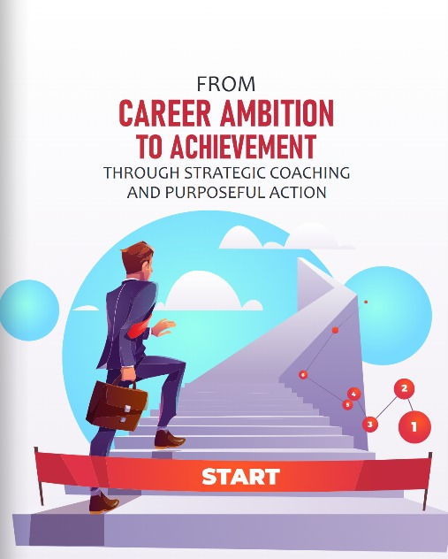
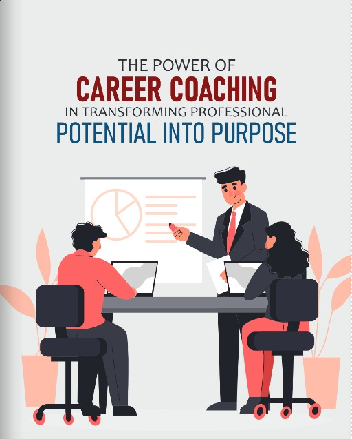

Gold Prices in India Today: Why Gold Rates Are Changing in 2026
Gold slid from about ₹1.42 lakh to between ₹1.25 and ₹1.35 lakh per 10 grams in two weeks. Here is why, what you really pay, and how to buy smart.
Gold slid from about ₹1.42 lakh to between ₹1.25 and ₹1.35 lakh per 10 grams in two weeks. Here is why, what you really pay, and how to buy smart.

Scores, critics, audience buzz and runtime: how to read the latest movie reviews and decide in 60 seconds whether a film deserves your evening.

Reported CFMoto engine, a ₹1.30 lakh price tag and 50 km/l hopes: what is credible, what is rumour, and why this bike matters.

Voyager 1 hit one light-day from Earth on November 18, 2026. Here is what 16 billion miles means, how fast it flies and what is next.

India A tours Nepal for three T20s on December 9, 11 and 13. Schedule, head-to-head record, recent form and players to watch.

Tithi from 7:15 AM on Nov 20 to 6:31 AM on Nov 21. Dates, parana, puja vidhi, Tulsi Vivah and the meaning of the day Vishnu wakes.

Anthropic priced at $83, opened at $111.50 and closed at $97.17 after a record $81.3 billion raise. What it means for founders, funding and exits.

Nifty rose to 25,387 and Sensex to 82,532 in November before profit-taking. What the indices are, why they moved and how to read them.

From fake collect requests to remote-access apps: seven UPI mistakes that drain bank accounts, and what to do within minutes of a scam.

AI writes code fast. These seven skills, from system design to security and verification, decide who stays valuable. Includes a 30-day plan.

Anthropic plans to list on Nasdaq as ANT around November 19. Here are the numbers, the $26 billion private placement, the risks, and the dates every investor should know.
The Dow had its best day since April 2025 after Democrats won Congress. Here is which sectors surged, what analysts say, and what business leaders should watch.

John Ternus replaced Tim Cook as Apple CEO on September 1, 2026. Here is who he is, what Cook does now, the challenges ahead, and the Nvidia twist.

Hassabis becomes chair and Alphabet's chief scientist, Koray Kavukcuoglu takes over operations, and Jeff Dean is reported to be leaving. Here is what it means.

Workday's co-founder came back as CEO in February 2026 and is rebuilding the company like a start-up. Here is why founders return and whether it works.

Confirmed date, platforms, pre-order prices and pre-load timing for Grand Theft Auto VI, plus what is still unconfirmed.

Key dates, what is worth buying, Black Friday versus Cyber Monday, and a simple plan to avoid fake sales.

What Anthropic's S-1 and amended filing reportedly show about revenue, losses and risk, and why the AI trade is watching.

Who is eligible, the deadline, the context behind the move and a practical checklist for tech workers.

A plain-English guide to the newest AI launches, staged access, pricing changes and the API key security warning developers should act on.

Discovering the Person Behind the Professional to Unlock True Leadership

Closing the Gap Between Knowing What You Want and Building a Strategy That Delivers

From a 1993 start-up bet to the first $5 trillion company, here is how Nvidia's CEO built the engine of the AI era, and what could still slow it down.

Tesla's rocket-assisted Roadster left the ground in Texas. Here is what happened, why real flying cars are so hard, and what to watch before 2028.

AI agents, data quality, zero-trust security and more: a practical look at the seven trends that matter, and how to choose the ones that fit your business.

ASML, CoWoS packaging, high-bandwidth memory and long equipment lead times: why AI demand is outrunning the machines that make the chips.

Google Veo, Runway, Kling, Luma and Pika compared by realism, control, free access and real-world use, plus prompting tips and the legal basics.

From Nvidia's AI factories and Arm's data center push to Amazon's chip bet, Microsoft's Maia 300 and Figma's design-first view, here is how five leaders are building the AI era.

From AI agents to cloud-first operations, here is how technology is reshaping the way businesses work, why most projects still struggle, and how companies of any size can get it right.

Why the best leaders build more leaders instead of giving more orders.

The leadership equation behind teams that actually perform.

As automation grows, creative, motivated people become a company's biggest advantage.

Why the best leaders track people, trust and long-term impact alongside profit.

Why continuous scenario planning is replacing the five-year plan.